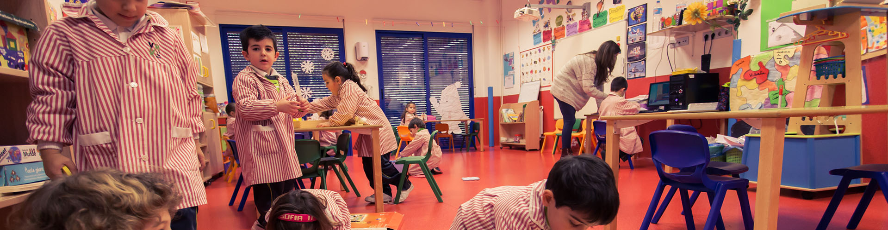
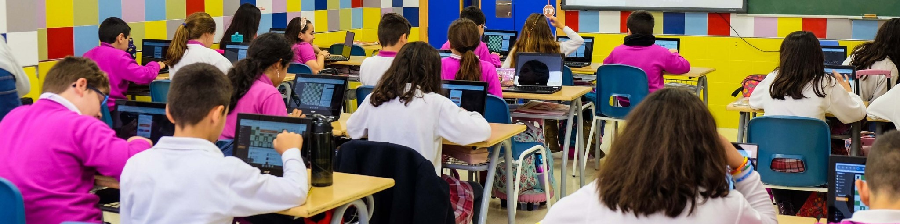

Esta etapa está dedicada al fomento y el desarrollo integral de personalidad individual de cada uno de nuestros alumnos mediante las habilidades sociales, emocionales, cognitivas y motrices básicas.
Nuestro proyecto propio es adaptable a las características de cada grupo y alumno, siendo el niño el que marca la dinámica según sus necesidades, intereses y capacidades.
Esta etapa está dedicada al desarrollo del interés por aprender y al fomento de la cultura general. Los alumnos alcanzarán su capacidad deductiva, inductiva y lógica a través de la propia experimentación. La evaluación del alumnado se realiza de manera continua valorando así en mayor medida el esfuerzo diario en lugar del resultado de una prueba única.
Nuestro proyecto propio es adaptable a las características de cada grupo y alumno, siendo el niño el que marca la dinámica según sus necesidades, intereses y capacidades. Formación básica e integral de calidad con proyectos únicos de 6 a 12 años.
La Educación Secundaria en CES Vega Media está diseñada para ofrecer una formación integral que combina conocimientos académicos con el desarrollo de habilidades prácticas y sociales. Nuestro objetivo es preparar a los estudiantes para enfrentar los desafíos del futuro, fomentando el pensamiento crítico y la creatividad.
2000 horas de formación en instalaciones eléctricas y automáticas.
2000 horas de formación especializada en cuidados de enfermería.
2000 horas de formación especializada en administración.
3000 horas de formación en desarrollo de aplicaciones web.
3000 horas de formación en educación infantil.